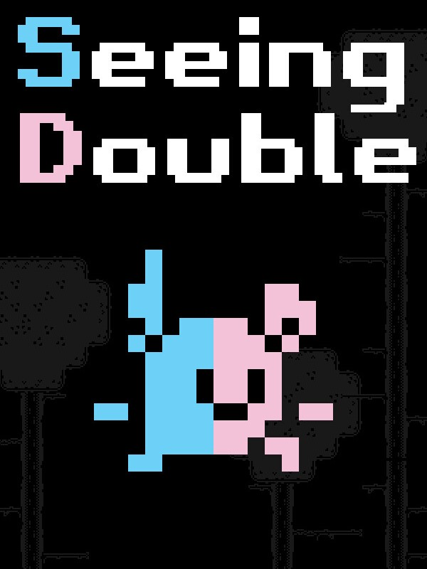

Seeing Double
Seeing Double
Details
 |
|
| Playtime | Not Played |
| Last Activity | Never |
| Added | 2026-10-11 0:14:21 |
| Modified | 2026-10-11 0:14:49 |
| Completion Status | Not Played |
| Library | Steam |
| Source | Steam |
| Platform | PC (Windows) |
| Release Date | 2026-06-12 |
| Community Score | |
| Critic Score | |
| User Score | |
| Genre | Adventure Indie Platform Puzzle |
| Developer | |
| Publisher | |
| Feature | Single Player |
| Links | Itch Discord Steam |
| Tag | 2D 2D Platformer Adventure Controller Co-op Co-op Campaign Early Access Indie Linear Local Co-Op Old School Pixel Graphics Platformer Precision Platformer Retro Side Scroller Singleplayer |
Description
ABOUT
In Seeing Double you control two characters, Pitter and Patter, in perfect sync with each other on two separate screens.
They each have their own view of the world, but you will quickly find that they do not see eye to eye.

Platforms, obstacles, and collectables that appear visible on one screen may be hidden on the other. Swap your attention strategically back and forth in order to navigate the mind-bending parallel worlds of Seeing Double.

Will you find a way to reunite them? Or will they remain trapped between realities?
KEY FEATURES
■ Old School 2D platformer action.
Run, jump, dash, climb, and more. Just like the good old days.


■ Platform mechanics galore.
Bounce high off of enemies and springs, ride moving platforms, bonk your head on strange boxes.


■ Frequent checkpoints that autosave your progress.
Fall to your death or need to exit out of the game? You'll quickly respawn at a nearby potted plant, with most rooms having at least one checkpoint.

■ Unlock new moves.
Jump into this vat of mystery liquid to unlock cool new abilities, such as the ubiquitous double jump, ground pound, dash slide, or crouch jump. Don't worry, it's safe. We've tested it. ■ Secrets.
■ Secrets.
For those with keen eyes and an adventurous spirit. ■ Meet wacky characters.
■ Meet wacky characters.
Who will definitely not try to rip you off. ■ Play a carnival game.
■ Play a carnival game.
And win wild prizes. ■ Piss yourself in fear.
■ Piss yourself in fear.
Wait, what? Ignore that. I'm sure it's nothing.
■ Play with a friend either locally or with Steam Remote Play!
An entirely new way to experience Seeing Double!

■ Uncover a tragic tale.
And discover how it all went wrong.

Thanks to the following:
Music: Penzilla, Cemal, Tim Beek, Tallbeard studios, Juhani Junkala.
Coding help: Peyton Burnham's platformer series on YouTube, Jon Peterson (Pixelated Pope)
Art: 1-Bit Platformer Pack by Kenney (Assets), 1-Bit Sci-Fi Tileset by Omniclause, Robo Factory 1-B by Rumblecade
THIS GAME CONTAINS NO AI GENERATED ASSETS. IT IS 100% REAL ART BY REAL ARTISTS.